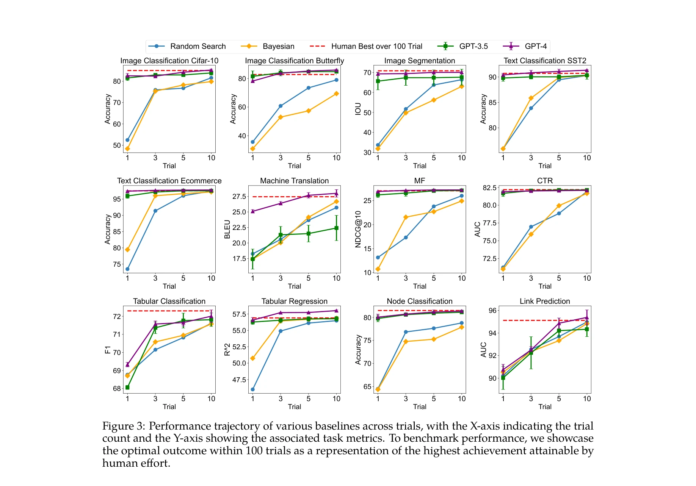
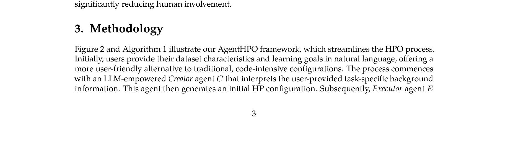

Essence

Figure 1: Comparative Frameworks in Hyperparameter Optimization: Human Expertise, Traditional
AgentHPO는 LLM 기반의 자율 에이전트를 활용하여 하이퍼파라미터 최적화를 자동화하는 프레임워크이다. Creator와 Executor 두 개의 특화된 에이전트가 협력하여 시행착오를 줄이고 해석 가능성을 높인다.
저자: Siyi Liu, Chen Gao, Yong Li | 날짜: 2024 | URL: https://arxiv.org/abs/2402.01881
Figure 1: Comparative Frameworks in Hyperparameter Optimization: Human Expertise, Traditional
AgentHPO는 LLM 기반의 자율 에이전트를 활용하여 하이퍼파라미터 최적화를 자동화하는 프레임워크이다. Creator와 Executor 두 개의 특화된 에이전트가 협력하여 시행착오를 줄이고 해석 가능성을 높인다.

Figure 3: Performance trajectory of various baselines across trials, with the X-axis indicating the trial

Figure 2 and Algorithm 1 illustrate our AgentHPO framework, which streamlines the HPO process.
총평: 본 논문은 LLM 기반 자율 에이전트를 하이퍼파라미터 최적화에 처음 적용한 창의적인 연구로, 설정 단순성과 해석 가능성에서 기존 AutoML을 개선했다. 광범위한 실험 검증과 명확한 프레임워크 설계가 강점이나, LLM 성능 의존성과 비용 분석이 보강될 필요가 있다.